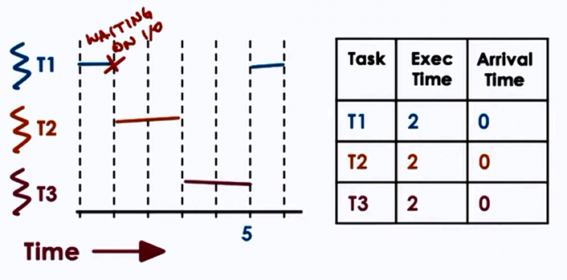
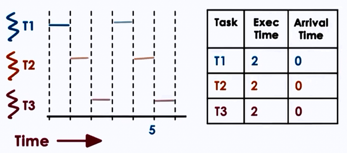

Scheduling
Operating System perform scheduling in the following simple ways:
- Dispatch orders immediately
- scheduling is simple FIFO (First-Come-First-Serve)
- Dispatch simple orders first
- maximize number of orders processed over time
- maximize throughput (SJF)
- Dispatch complex orders first
- maximize utilization of CPU, devices, memory
CPU Scheduler
- Decides how and when process (and their threads) access shared CPUs
- Schedules tasks running at user level processes/threads as well as kernel level threads
- Chooses one of the ready tasks to run on CPU
- Runs when
- CPU becomes idle
- new task becomes ready
- timeslice expired timeout
Context switch, enter user mode, set PC and go! <= Thread is dispatched on CPU.
- Which task should be selected?
- Scheduling policy/algorithm
- How is this done?
- Depends on runqueue data structure
"Run-to-completion" Scheduling
- Initial assumptions
- group of tasks/jobs
- known execution time
- no preemption
- single CPU
- Metrics
- throughput
- average job completion time
- average job wait time
- CPU utilization
Scheduling algorithms:
1. First Come First Serve (FCFS)
- Schedules tasks in order of arrival
runqueue = queue(FIFO)
If T1, T2, T3 arrive in the given order and T1 has execution time 1s, T2 10s and T3 1s then :
- Throughput = 3/(1+10+1) = 3/12 = 0.25s
- Average completion time = (1 + 11 + 12)/3 = 8s
- Average wait time = (1+1+11)/3 = 4s
2. Shortest Job First (SJF)
- Schedules tasks in order of execution time
- Therefore for the above example, T1(1s) > T3(1s) > T2(10s)
runqueue = ordered(queue)
//or
runqueue = tree()
For SJF,
- Throughput = 3/(1+10+1) = 3/12 = 0.25s
- Average completion time = (1 + 2 + 12)/3 = 5s
- Average wait time = (0+1+2)/3 = 1s
Preemptive Scheduling
- SJF + Preemption
T2 arrives first.

Priority Scheduling
- Tasks have different priority levels
- Run highest priority task next (preemption)

runqueue = per priority_queue()
//or
runqueue = tree() ordered on priority
- low priority task stuck in runqueue => starvation
- "priority aging"
- priority = f(actual priority, time spent in runqueue)
- eventually tasks will run
- prevents starvation
3. Round-Robin Scheduling
- Pick up the first task from queue (like FCFS)
- Task may yield to wait on I/O (unlike FCFCS)



Timeslicing
- Timeslice = max amount of uninterrupted time given to a task
- task may run less than timeslice
- has to wait on I/O sync
- will be placed on queue
- higher priority task becomes runnable
- has to wait on I/O sync
- using timeslice tasks are interleaved
- timesharing the CPU
- CPU bound tasks => preemption after timeslice

Advantages
- Short tasks finish sooner
- More responsive
- Lengthy I/O operations initiated sooner
- best to keep timeslice > context-switch-time
Disdvantages
- Overheads
How long should a timeslice be be?
- should balance benefits and overheads
For CPU bound tasks:

- Hence, for CPU bound tasks, larger timeslice values are better
For I/O bound tasks:

- Hence, for I/O bound tasks, smaller timeslice values are better
- Keeps CPU and I/P devices busy, I/O bound tasks run quickly, makes I/O requests responds to a user.
Summary
-
CPU bound tasks prefer longer timeslices
- limits context switching overheads
- keeps CPU utilization and throughput
-
I/O bound tasks prefer smaller timeslices
- However, if all the tasks in contention are I/O bound, it may not make such a difference
- If a portion of them are I/O smaller timeslices keeps CPU and device utilization high
- Provides better user-perceived performance